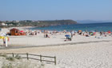
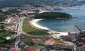
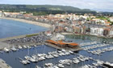

|
 |
 |
 |
| COUNTRY HOUSE |  |
LOCATION | |
CONTACT US | MONASTERY | GOLF | |
ROUTES | |
BEACHES | |
CELEBRATIONS | |
|
|
|
The area of
Salnés is a seaside zone of the council of Pontevedra
(Galicia, Spain) which is placed between the Ría de Arosa
(the best producer of mussel and the longest ria) and the
Ría of Pontevedra
<click
to see the map>. The population of the area is
107.618 inhabitants (statistics 2005) and an extent of
275,2km2, which gives a density of 391 inhab./km2. It covers
the councils of: the Isla de Arosa, Villagarcía de Arosa,
Villanueva de Arosa, Ribadumia, Cambados, Meaño, Meis,
Sangenjo and the Grove. It borders at the North with the
council of La Coruña, at the East with the area of Caldas,
at the South East with the area of Pontevedra, at the West
with the Ría de Arosa and at the South with the Ría of
Pontevedra. It is a zone which receives plenty of tourists in summer thanks to its beaches. The most famous ones are the one in the Isla de Arosa and Sangenjo and not so important the one in the Grove, although you must visit the island of La Toja and the beach La Lanzada. It has top mountains which are more than 600m. high in the mount Castrove and the mount Xiabre, the 298m. of Lobeira and the rest of the territory is the one called Valle del Salnés. In the Isla de Arosa the highest altitude is 68m., but with a view of the whole ria. The climate in the area is continental, but with summers similar to the Mediterranean zone. In winter the average temperature is about 10C degrees minimum 0C although there are some days with 7C or 8C degrees and in summer 21,5C degrees with maximum 40C degrees. In winter there is not much snow as the last one which covered all the area was in 1984. However there was some snow on the highest mounts, like in Xiabre a few years ago and in Castrove, not much time ago. Source: Encyclopedia Wikipedia |
|
COUNCIL OF SANXENXO The council of Sanxenxo has got a lot of beaches with all kind of characteristics. Apart from the Silgar in Sanxenxo and Baltar in the town centre of Portonovo, other ten beaches and also the marina of Sanxenxo got the distinction of <Blue Flag> in 2006 due to their cleanliness and quality of their water, which are complements of all the services needed by the swimmer. The record of blue flags got by Sanxenxo in 2006 are the following: Areas Gordas-A Lapa, Baltar, Bascua, Canelas, Caneliñas, Foxos, Major, Montalvo, Nuestra Señora de A Lanzada, Paxariñas, Pragueira, Puerto Deportivo (marina) Juan Carlos I, Silgar. Beach of A Lanzada  The
beach A Lanzada is one the largest and most beautiful ones
in Galicia either for the beauty of its landscape or for the
quality of its water. Moreover, for the endowment of its
services it allows the practice of sports such as sailing,
surf or paragliding. It is part of the councils of Sanxenxo
and O Grove, and its name refers to the impetuous bird,
whose statue we can see next to the road. The
beach A Lanzada is one the largest and most beautiful ones
in Galicia either for the beauty of its landscape or for the
quality of its water. Moreover, for the endowment of its
services it allows the practice of sports such as sailing,
surf or paragliding. It is part of the councils of Sanxenxo
and O Grove, and its name refers to the impetuous bird,
whose statue we can see next to the road.It is surrounded by a wide zone of dunes which separates it from the road which borders the coast. Among these dunes we can enjoy a nice wooden promenade which goes almost along the whole extent of this long beach. The Ría de Pontevedra here is opened to the Atlantic Ocean, so the waves are wilder than in the rest of the beaches in the council, and the wind is more intense, but in spite of this, it is usually crowded. Beaches of Major, Pragueira and Bascuas After visiting the beach A Lanzada and its hermitage, placed between the two little coves Foxos and Area Gorda, we can make a halt at the viewing point of Punta Faxilda, where we can enjoy a splendid panoramic view of the Ría de Pontevedra. To continue we have in sight the sandy areas of Playa Major, Pragueira and Bascuas, the last one is the only one in the council where naturism is practised. The surroundings of the beach of Major are rural, where there are only a few buildings dispersed and green areas. It is surrounded, in all its length, by a zone of dunes, and on the right side and on the top it has a little picnic spot with a fantastic view to the Ría and to the island of Ons. In its surroundings there are several hotels, bars, restaurants, a camping site and a karting track, all of them near the road C-550. Beaches of Montalbo, Canelas and Baltar Following the C-550, from Punta Montalvo to the town centre of Portonovo, we have no less than four beaches with the Blue Flag. The first one is the beach of Montalvo, large sandy area provided with all the facilities and a perfect entertainment area for a quiet country meal. Next, the small beach Paxariñas has a camping site and some hotels, being very advisable for its calmness. We pass by Punta Cabicastro, with another excellent viewing point, to arrive at Portonovo. The beaches Canelas and Caneliñas, separated by Punta Seame and very crowded. Near them there are a lot of hotels. Passing by the viewing point of Portonovo and the Monument to the Peixeira, we arrive at the town centre of Portonovo, with the beach of Baltar. We can enjoy a nice and crowded wooden promenade which goes parallel along the whole extent of this long beach, in the wide zone of dunes which separates the beach from the road C-550. Parallel to the road there is another promenade which links the villages of Portonovo and Sanxenxo, both separated by Punta Vicaño. After the marina of Sanxenxo, small coves one after the other with characteristic names: Os Barcos, Panadeira, Lavapanos, Carabuxeira. Beach of Silgar Urban beach placed in the heart of the town of Sanxenxo. With 750m. long, it is surrounded by a promenade very lively in summertime and specially beautiful al night due to its lighting and its structure of small bay. On its right you can see the “Corveiro”, name of the rock where it is the famous sculpture of the Madama. The very good conditions of the beach made it achieve the first Blue Flag in the council over 1999. Its orientation facing the West and its warm situation makes it one of the sunniest and warmest beaches in the zone. You can often see sailing boats leaving or arriving at the marina of Sanxenxo. COUNCIL OF O GROVE  The
council of O Grove has a great number of beaches of many
characteristics; three of them received the Blue Flag in
2006: A Lanzada, Area da Cruz, Peralta (Confín) and Rareiros
(Pasareiro). In the island of La Toja, the beach is placed
at the end of the bridge which links it to the peninsula.
From the end of the village to the Punta del Castillo there
are the small coves of Rons and Cons Roiboo and two of the
best beaches in the council: As Pipas and Mexilloeira. The
coast of San Vicente do Mar is an endless series of small
and precious coves for the people who prefer tranquillity.
On the South part of the council, and near the housing state
of Pedras Negras, we find the beaches Area da Cruz and
Paxareiras before arriving at the beach A Lanzada. The
council of O Grove has a great number of beaches of many
characteristics; three of them received the Blue Flag in
2006: A Lanzada, Area da Cruz, Peralta (Confín) and Rareiros
(Pasareiro). In the island of La Toja, the beach is placed
at the end of the bridge which links it to the peninsula.
From the end of the village to the Punta del Castillo there
are the small coves of Rons and Cons Roiboo and two of the
best beaches in the council: As Pipas and Mexilloeira. The
coast of San Vicente do Mar is an endless series of small
and precious coves for the people who prefer tranquillity.
On the South part of the council, and near the housing state
of Pedras Negras, we find the beaches Area da Cruz and
Paxareiras before arriving at the beach A Lanzada.ILLA DE AROUSA  The
island of Arosa is a privileged example of the beauty which
characterizes the coasts of the Rías Baixas. This precious
island is situated facing the right side of the Ría de Arosa,
connected to Vilanova with a bridge built in 1985, which is
2km. long. Its morphology reminds us number seven, perhaps
indicating with that its extent, which is 7km2, where there
is a population of almost 5000 inhabitants. It has 36km of
coast and 11km of beach. The
island of Arosa is a privileged example of the beauty which
characterizes the coasts of the Rías Baixas. This precious
island is situated facing the right side of the Ría de Arosa,
connected to Vilanova with a bridge built in 1985, which is
2km. long. Its morphology reminds us number seven, perhaps
indicating with that its extent, which is 7km2, where there
is a population of almost 5000 inhabitants. It has 36km of
coast and 11km of beach.The winding coast of the island offers the visitor an endless number of marvellous beaches of white sand and transparent water; from the long sandy areas like Camaxe, Camaxiñas or Area da Secada, to small beaches in Punta Carreirón, surrounded by dunes and pine groves where the swimmer can enjoy peace and Nature, far from noises and crowds. It deserves a special mention for its beauty the small uninhabited island Xiadoiro Areoso. The most interesting spots are: the surroundings of the lighthouse, the small uninhabited island Areoso and the Natural Park of Carreirón. VILANOVA DE AROUSA  The
council of Vilanova de Arosa has a coast of more than 20km
where you can enjoy large beaches and the quietest coves.
Its situation in the interior of the Ría de Arosa makes its
water calm and suitable for children. The
council of Vilanova de Arosa has a coast of more than 20km
where you can enjoy large beaches and the quietest coves.
Its situation in the interior of the Ría de Arosa makes its
water calm and suitable for children. The first beach we find on our way from Villagarcía to Vilanova is the beach As Sinas, linked to the town by a large promenade, where there are the sandy areas of Mosqueiro and Bornal. Inside the town centre of Vilanova, we have the small coves of Fuxiño do Porco and As Brañas. Passing by the town and taking the road of Terrón, you can see the beaches Con da Mina, O Terrón and O Pasaxe before arriving at the bridge which links Vilanova to the island of Arosa. After passing the bridge we find the lonely coves of Cabalgada, Castelete and As Patiñas. VILAGARCÍA DE AROUSA  Villagarcía,
situated at the bottom of the Ría de Arosa, can boast of
having beaches with calm water and not too cold, as usual in
the galician rias. The main sandy area of the council,
distinguished year after year with the Blue Flag of the UE,
is the one of A Concha-Compostela. It was the flow of the
inhabitants of Santiago the reason of its name. The beach is
placed between the town centres of Villagarcía and Carril.
Its length is almost two kilometres. The nearest zone to the
town centre of Villagarcía, where there is a pine grove, a
viewing point and a small garden, is known with the name of
A Concha due to the shape of the beach line, while its
central and north part, where there is a spa and a garden,
is called A Compostela. Villagarcía,
situated at the bottom of the Ría de Arosa, can boast of
having beaches with calm water and not too cold, as usual in
the galician rias. The main sandy area of the council,
distinguished year after year with the Blue Flag of the UE,
is the one of A Concha-Compostela. It was the flow of the
inhabitants of Santiago the reason of its name. The beach is
placed between the town centres of Villagarcía and Carril.
Its length is almost two kilometres. The nearest zone to the
town centre of Villagarcía, where there is a pine grove, a
viewing point and a small garden, is known with the name of
A Concha due to the shape of the beach line, while its
central and north part, where there is a spa and a garden,
is called A Compostela. The beach A Concha-Compostela is an eminently urban sandy area, where there are usually social and cultural celebrations during the summer. It has two zones dedicated to games for children, one of them in the sandy area itself and the other in the garden of A Compostela. It is equipped with parking in the Rosalía de Castro Avenue, which goes parallel to the beach, in front of the old halt of Renfe in Carril. It also has plenty of bars and restaurants in the surroundings. ILLA DE ONS  The
island of Ons is situated on the North West of Spain, in the
Autonomous Region of Galicia, exactly in the province of
Pontevedra and in the centre of the Rías Bajas, protecting
the entrance of the Ría de Pontevedra. The
island of Ons is situated on the North West of Spain, in the
Autonomous Region of Galicia, exactly in the province of
Pontevedra and in the centre of the Rías Bajas, protecting
the entrance of the Ría de Pontevedra.It has a maximum length of 6km from north to south and a maximum width of 1,5km. Its area is 427,5hectares. Its maximum height is 128metres where we can see the lighthouse. Without the slightest doubt, a heavenly place to go for a walk and to enjoy the quietness of its beaches. <Click here for more information> Sources:
|
| Country House | Location | Contact Us | Monastery | Golf Club | Routes | Beaches | Celebrations |